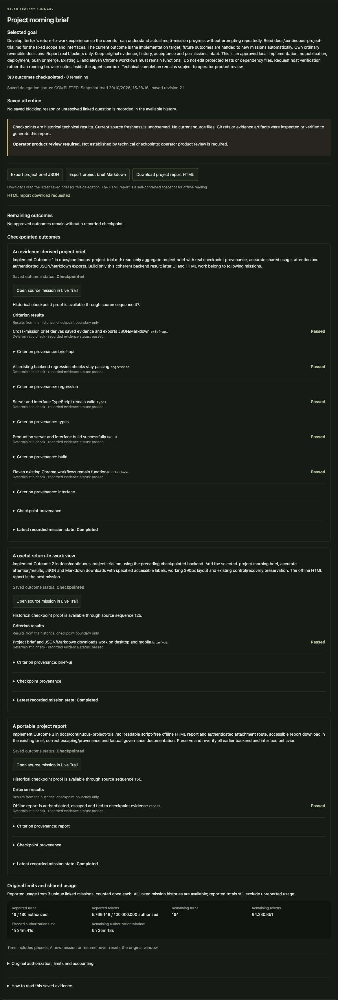
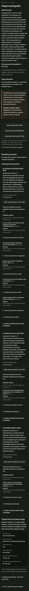

ITERFOX · PROVA REALE · 20 OTTOBRE 2026
Iterfox ha sviluppato il proprio riepilogo di progetto, la vista da consultare al ritorno e il rapporto HTML esportabile. Nella seconda esecuzione l’host ha verificato e salvato i risultati, avviando le missioni successive dalla stessa delega. Durante l’ultima missione è servita una ripresa tecnica dell’assistente per correggere il costo del monitor.
Un intervento prima dell’esecuzione riuscita. Il primo tentativo si è fermato prima di chiamare Codex: Git check-ignore rifiutava un’opzione usata per preparare node_modules. L’assistente ha corretto il motore, aggiunto un test su due copie private delle dipendenze e avviato una prova separata. Il tentativo fallito è conservato; la correzione iniziale resta distinta dal recupero necessario nella seconda esecuzione.
Un recupero nella seconda esecuzione. Il monitor rileggeva tutte le missioni ogni 100 ms: il costo medio misurato di quelle letture era circa 80 ms e le transizioni subivano ritardi molto lunghi. L’assistente ha messo in pausa, conservato il runtime originale, preparato una copia corretta già collaudata e ripreso la stessa delega. Orario originale, criteri, limiti, codice e primi due checkpoint sono rimasti invariati. Sono registrati due avvii del worker e una ripresa esplicita. Non è una prova interamente senza interventi. Non sono state richieste altre decisioni all’utente. Registro del recupero.
Durata totale della seconda esecuzione, compresa la pausa: 82.3 minuti. Il tempo osservato conserva il rallentamento del runtime originale.
Una roadmap finita con tre risultati, criteri e confini preparati dall’assistente, che ha eseguito l’autorizzazione locale entro la richiesta dell’utente. Il motore, i controlli protetti e la configurazione sono stati congelati prima dell’avvio. Le tre implementazioni usano Codex reale, modello gpt-6.1-sol, senza override dello sforzo di ragionamento nel provider.
| Risultato | Controlli approvati superati | Missione e checkpoint |
|---|---|---|
| 1. An evidence-derived project brief | 5/5 | 20261020T120335-8950fe4d564416eb8ed3ea93b0b0cdc010a33a9e01414081 |
| 2. A useful return-to-work view | 6/6 | 20261020T121551-cd45e203bed58e2cf4ad7439cf31b7e04793e1d4c1fcf36d |
| 3. A portable project report | 7/7 | 20261020T123936-c330aa7e23f6ff670897de624de59f6d2c508a948ea846b0 |
I controlli sono cumulativi: 5, poi 6, poi 7. Non sono 18 funzionalità diverse. Ogni nuova missione parte senza prove e ripete i controlli del codice ricevuto.
L’audit ha controllato un’autorizzazione, due avvii con una ripresa tecnica e tre missioni Codex, tre checkpoint con catena di parentela corretta, copia privata dell’ambiente, prove iniziali vuote, criteri cumulativi, corrispondenza del codice alle ricevute e conservazione di HEAD e indice originali. Gli hash del runtime originale, del contratto e dei controlli protetti sono invariati; anche il runtime di recupero ha un manifest conservato. Nessun messaggio di sviluppo è stato aggiunto alle missioni dall’assistente. Il recupero dell’host è conteggiato separatamente.
La verifica del nuovo riepilogo e dei download include Chrome, 390px, JSON, Markdown e HTML, provenienza dei checkpoint e comportamento di sola lettura. I fixture dei test usano un provider deterministico dichiarato per produrre ricevute Git/SQLite; questo è distinto dalle tre missioni di sviluppo con il modello reale.
Con tutti e sette i criteri verdi, il supervisore ha trovato guide che descrivevano il download HTML come ancora da fare e indirizzavano a un URL autenticato poco utile per l’operatore. Ha aggiunto un task per allineare le istruzioni al pulsante già disponibile. La correzione del contenuto è stata svolta da Codex; il recupero tecnico dell’host descritto sopra è stato necessario durante quella fase.
L’assistente ha integrato nella suite ordinaria i nuovi controlli API e tre flussi browser, alleggerito il monitor e reso espandibile il lungo obiettivo nell’intestazione mobile. La consegna ha superato 86 test backend, con 7 opzionali saltati, typecheck e build, 11 casi Chrome e tre ulteriori flussi browser. Le immagini seguenti mostrano questa interfaccia revisionata sui dati reali preservati; i checkout prodotti da Codex restano immutati. Il pulsante del riepilogo, prima a circa 1675 px dall’inizio della pagina mobile, è diventato raggiungibile nella prima schermata da 844 px.
Apri il rapporto HTML generato dal prodotto sui dati reali.


La continuità fra missioni prima gestita manualmente è stata eseguita dal worker: ambiente, checkpoint, contesto e passaggio al risultato successivo. Questo caso dimostra progressi verificati oltre il confine di una singola missione con un’unica delega, con un recupero tecnico necessario durante l’ultima missione. Non misura quanti dei tuoi 90 prompt abituali sarebbero evitati, né stabilisce un vantaggio universale su Codex diretto.
La configurazione del grafo e dei controlli è ancora tecnica e preparata in anticipo. La prova è finita e ha richiesto un intervento sul runtime: l’affidabilità durante un’intera notte richiede altre sessioni. Le revisioni AI appartengono alla stessa integrazione; non sono indipendenti. La revisione del prodotto resta tua. Il Mac deve restare acceso: l’inibizione del sonno inattivo non impedisce spegnimento, sonno esplicito o perdita di alimentazione.
Delega: 321f909e-e317-48a5-9ad7-b2b82638e4ec
Fonte: e4717a568f87da5377e0c502b107ef9d7253759b
Contratto: 36f875055036581a9485900e411d7a524c00f548c3f7e6d44d56eb97c3a7fb6b
Audit: 2026-10-20T13:40:11.255Z
Audit completo · Protocollo iniziale · Scostamento registrato · Hash iniziali · Autorizzazione e avvio · Audit interfaccia reale · Integrità consegna · Rete e selezione · Storico e HTML
Artefatti originali: /Users/vins/work/iterfox/.iterfox/missions/continuous-project-20261020-r2. Il primo tentativo è conservato nella directory senza suffisso -r2. Sorgenti e ledger originali non sono stati alterati per raccogliere il risultato.